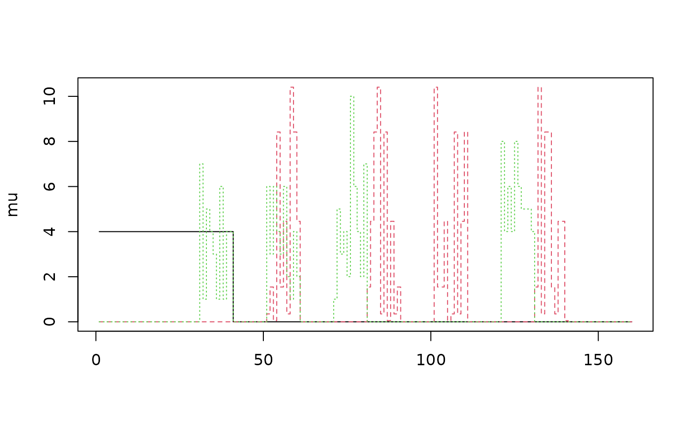

Generate the signal in the leaves of the tree
Source:R/tree-simulation-functions.R
gen.mu.leaves.RdGenerate the signal in the leaves of the tree
Arguments
- m
An integer value, the number of hypotheses
- K1
An integer value, the number of non-null leaves
- d
A numeric value in \([0,1]\), the proportion of non-null signals in each non-null leaf
- grouped
A boolean value, whether the non-null leaves are contiguous or not
- setting
A character value specifying the shape of the signal in each non-null leaf
- barmu
A numeric value, the strength of the signal
- leaf_list
A list of leaves as generated by
dyadic.from.Nnnfunctions
Details
If setting == "const" the non-null signal is constant equal to barmu. If setting == "gauss" and \(d=1\) the signal in an active leaf has the shape of a Gaussian bell with mean barmu, see the gauss_bloc function which generates it. If \(d<1\) it has the same shape but randomly pruned. If setting == "poisson" the non-null signal is randomly drawn according to a Poisson distribution of mean barmu (slightly modified to not yield 0). If setting == "rgauss" the non-null signal is randomly drawn according to a Normal distribution of mean barmu and variance barmu.
Examples
m <- 160
s <- 10
K1 <- floor(m/(s * 4))
d <- 1
barmu <- 4
dd <- dyadic.from.window.size(m, s, method = 2)
leaf_list <- dd$leaf_list
muC <- gen.mu.leaves(m = m, K1 = K1, d = d, grouped = FALSE,
setting = "const", barmu = barmu, leaf_list =leaf_list)
muC <- gen.mu.leaves(m = m, K1 = K1, d = d, grouped = TRUE,
setting = "const", barmu = barmu, leaf_list =leaf_list)
muG <- gen.mu.leaves(m = m, K1 = K1, d = d, grouped = FALSE,
setting = "gauss", barmu = barmu, leaf_list =leaf_list)
muP <- gen.mu.leaves(m = m, K1 = K1, d = d, grouped = FALSE,
setting = "poisson", barmu = barmu, leaf_list =leaf_list)
mu <- cbind(constant = muC, Gaussian = muG, Poisson = muP)
matplot(mu, t = 's')
